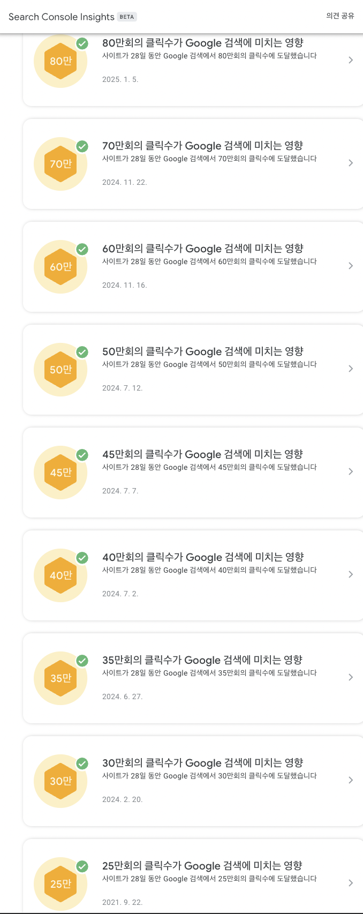

CV (Curriculum Vitae)
Seunggon Kim
Rather than shifting fields, my career reflects a consistent pursuit of building end-to-end problem-solving skills—from solid CS fundamentals, through embedded systems, to deep expertise in my current field.
Contents
Work experience | Education | Projects | Skills | Awards | Publications | Languages
Work experience
Tech lead, Kinolights Inc. - Korea
Mar. 2022 - Present
- Developed the back-end of Kinolights.
- Built a notification server to control both in-app notification center and push notifications such as FCM.
- Designed and implemented a community server to post, comment, respond and search. The feature-rich post includes link preview, poll, image/video upload, and tagging.
- Built a search engine on top of Elasticsearch with support for initial consonant search, phoneme-level matching, synonym expansion, typo correction, and trend-aware scoring.
- Developed a metadata collection system combining crawling and third-party API integration to enrich internal datasets.
- Implemented a point system that rewards user actions and enables event participation, including supporting modules for winning probability calculation, aggregation, and redemption tracking.
- 📚 NestJS, RxJS, TypeORM, GraphQL, MySQL, Elasticsearch, Redis, Kafka, RabbitMQ, BullMQ, Amplitude, Datadog, Sentry
- ☁ AWS - RDS, ElastiCache, OpenSearch, MQ, MSK, Fargate, ECS, SQS, SNS, SES, Lambda, Batch, EventBridge, WAF, Route53, CloudFront, S3, MediaConvert, CloudWatch
- Improved SEO to increase monthly Google search clicks from 250K to 800K through technical optimizations and content restructuring.
- 
- Gradually modernized a legacy mobile application through a phased transformation.
- Consolidated separate Android and iOS web apps into a single Flutter-based web app, reducing maintenance costs and improving rendering performance.
- Further evolved the application into a full-featured native app using Expo and React Native to enhance cross-platform capability and user experience.
- 📚 Flutter, React Native
- Maintained overall service infrastructure including cost optimization, deployment pipelines, and resource monitoring.
- Implemented event tracking pipeline with Amplitude: managed quotas, user identity mapping, event schema, dashboard guidelines, and internal onboarding.
Software engineer, ActionPower Corp. - Korea
Jul. 2021 - Feb. 2022
- Built a stable and scalable Speech-To-Text (STT) pipeline.
- Achieved high availability by orchestrating multiple kubernetes clusters consisting of on-premise Airflow and Google Cloud Composer.
- Increased inference throughput by leveraging NVIDIA Triton for parallel execution.
- 📚 Airflow, Microk8s, NVIDIA Triton, Kubernetes, Python, GCSFuse
- ☁ GCP - Composer, GKE, GCS
- Designed and implemented a real-time streaming STT service.
- Developed the back-end of Daglo that is B2C/B2B/B2G service providing STT.
- Reduced operational costs by adopting Apache Airflow and optimizing infrastructure resources.
- Built a data warehouse using Elasticsearch and Kibana for efficient data storage and visualization.
- Developed a transcript search engine using Elasticsearch’s Korean analyzer Nori and TF-IDF for relevance ranking.
- 📚 Express.js, FastAPI, Firebase, Elasticsearch
- ☁ GCP - GKE, GAE, GCS, GSR
- Developed the back-end of Atend for video conference and following STT.
- 📚 NestJS, RxJS, Firestore, Redis, Twilio
- ☁ GCP - GAE, GCS
- Implemented an automated end-to-end testing environment for continuous integration.
- 📚 Selenium, Nightwatch, LambdaTest
Software engineer, LINE Plus Corp. - Korea
Jun. 2019 - Jul. 2021
- Developed the back-end of LINE messenger.
- Implemented features including read-only chatroom, adult-only chatroom, abusive user detection and so on.
- Improved the performance of LINE app by introducing conditional chat prefetching, which reduced total blocking time.
- Reduced Elasticsearch get/search latency by 2x through query and cluster optimization.
- Contributed to Armeria to expose internal metrics for server monitoring. And integrated Prometheus-compatible metrics and built Grafana dashboards for service observability.
- Identified and resolved performance bottlenecks using profiling tools such as heatmaps, thread dumps, and heap dumps.
- Manually upgraded Elasticsearch from version 5.0 to 6.3 across two clusters (active-standby configuration).
- Built a fault-tolerant Kafka producer with logging-based recovery to minimize message loss.
- Developed a back-office Content Management System (CMS) for internal operations.
- 📚 Spring, Java, RxJava, MySQL, Redis, Elasticsearch, HBase, Kafka, Zookeeper, Armeria, Central Dogma, Retrofit, Thrift, Protobuf, Jenkins, Ansible, Zipkin, JMH, Grafana, Prometheus, Micrometer, Dropwizard
- Developed CI/CD pipelines and automation processes.
- Implemented and stabilized end-to-end (E2E) tests to verify behavior and server push on SPDY called LEGY.
- Built a periodic ranking/trending data generation system using Elasticsearch.
- Developed custom load-testing programs using Gatling to simulate high-load conditions.
- Built a dedicated monitoring server to handle complex conditions not expressible in PromQL, with alerting bots integrated into Line Messenger and Slack.
- 📚 Spring Batch, Flask, Gatling, Java, Python, Kotlin, Scala
Senior researcher, Coinplug Inc. - Korea
Oct. 2017 - Jun. 2019
- Developed the back-end of cryptocurrency exchange.
- Enhanced bidding API performance by 200x through architectural redesign.
- Implemented KYC (Know Your Customer) authentication system.
- Developed deposit and withdrawal processing for KRW and cryptocurrencies.
- Continuously integrated newly listed cryptocurrencies into the exchange platform, ensuring timely support and smooth trading operations.
- 📚 Spring, MySQL, RabbitMQ
- ☁ AWS - EC2, MQ
- Designed and deployed an Ethereum proxy server that delegates user transactions to the blockchain network.
- 📚 Go, Ethereum
- ☁ AWS - Lambda, API Gateway
- Developed decentralized applications (DApps) that interact with smart contracts via Web3.
- 📚 Solidity, Ethereum, IPFS, React
- Implemented API clients for trading and monitoring the tendency.
- 📚 Go, React
- Researched blockchain technologies and security issues on all sides such as platform, smart contract, GDPR and so on.
Research engineer, Hyundai Motor Company - Korea
Mar. 2014 - Sep. 2017
- Researched and implemented an RM/EDF-based task scheduling simulator incorporating CAN, CAN-FD and FlexRay networks.
- Developed automated code generation workflows from MATLAB/Simulink models to embedded boards for various ECUs (e.g., Infineon).
- Extended generated code deployment to AUTOSAR and ODIN platforms through additional R&D efforts.
Education
- M.S. and Ph.D. Candidate, CE, Seoul National University, Korea, 2017
- B.S., CE, Kwangwoon University, Korea, 2012
- Extra
- Self-Driving Car Nanodegree Term1 and Term2, Udacity, 2017
- Software Maestro, Ministry of Science, Korea, 2013
Projects
- Open source
- Armeria - a microservice framework to easily build any type of technologies including gRPC, Thrift, Retrofit and so on.
- Python client for Central Dogma - a Python client for Central Dogma that is highly-available version-controlled service configuration repository based on Git, ZooKeeper and HTTP/2.
- Solo
- Chewing Diet - iOS, Android, Web
- ~10K total downloads and ~1K MAU.
- 📚 Flutter, Firebase, Next.js, Tailwind CSS
- 오늘부터 전공면접 IT - iOS, Android, Web
- a MCQ-based (Multiple Choice Question) study helper for IT interview.
- 📚 Flutter, Firebase, Next.js, Chakra UI
- Employee Stock Option Calculator - iOS, Android
- 📚 Flutter, Firebase
- MojiE - iOS, Android
- 📚 Flutter, Firebase
- Chewing Diet - iOS, Android, Web
-
Research
- CPS-Sim, 2016 - 2017
- End-to-end tool for developing CPS(Cyber Physical System)
- ECU-level real-time simulator, 2013 - 2017
- w/ Hyundai Motors
- Support verification of application logic on vehicle
- Component based design theory and control kernel for CPS, 2013 - 2015
- Real-time system SW on multicore and GPGPU for unmanned vehicles, 2016 - 2017
- Drone simulation for AED(Automatic External Defibrillator) delivery, 2017
Skills
- Programming language
- Java, TypeScript, Python, Go, Dart
- Assembly, C, C++, C#, Kotlin, Scala, MATLAB, ML, Objective-C, Ocaml, Painless, PHP, Scala, Solidity, Tcl/Tk
- Platform & Framework
- Reactive
- RxJava, RxJS
- Back-end
- [Java] Spring, Spring boot, Armeria, Guava, JUnit
- [TypeScript] NestJS, Express.js, Node.js, Puppeteer, Jest
- [Python] Airflow, FastAPI, Flask, Django, pytest
- [Storage] Elasticsearch, Redis, MySQL, HBase, Firestore, DynamoDB, LevelDB, PostgreSQL, Zookeeper, Central Dogma, Ethereum, IPFS
- [Stream] Kafka, RabbitMQ, BullMQ, AWS SQS
- [Orchestration] Docker, Jenkins, Kubernetes
- [Monitoring] Datadog, Grafana, Kibana, Prometheus, Sentry, Zipkin, Gatling
- Front-end
- Next.js, React, Vue.js, Tailwind CSS
- App
- Flutter, React Native, Nativewind
- Tizen, Qt, Unity, Cocos2d, MFC
-
Vehicle field
- [Simulator] CarSim, Torcs
- AutoBox, AUTOSAR, EB Tresos, Odin, Simulink
- FlexRay, CAN(Controller Area Network), CAN-FD
- Reactive
- Protocol
- HTTP/2, REST, GraphQL, gRPC, RTC, SSE, SPDY, Thrift, Websocket
- Cloud service
- AWS - RDS, OpenSearch, Elasticache, MQ, MSK, SNS, SMS, SQS, WAF, CloudFront, ALB, API Gateway, Fargate, ECS, EC2, Lambda, Batch, EventBridge, MediaConvert, CloudWatch
- GCP - Composer, GAE, GCE, GCR, GCS, GKE, GSR, Memorystore
-
Tool
- Github, Gitlab, Sourcetree, JSFiddle, Remix
- Slack, JIRA, Trello
- [Documentation] Confluence, Doxygen, Javadoc, Sphinx, Jekyll
- [Analysis] async-profiler, Dr.Memory, Valgrind, Black Duck Hub
- [Package manager] Gradle, Helm, npm, yarn, pip, dep
- Hardware-related
- CodeWarrior, GreenHills, TASKING, Trace32
- Infineon(TC1797, TC275), STMicro(SPC56EL70), Freescale(MPC5606B), Raspberry Pi, Arduino
- CANalyzer, CANDB, PCAN-USB, Vector(VN1640, VN7600)
Awards
- 2nd prize, OSS grand developers challenge, National IT Industry Promotion Agency (NIPA), 2016
- Best paper award, Korea Computer Congress (KCC), 2017
Publications
- Kyoung-Soo We, Seunggon Kim, Wonseok Lee, and Chang-Gun Lee, Functionally and Temporally Correct Simulation of Cyber-Systems for Automotive Systems, in IEEE Real-Time Systems Symposium (RTSS), 2017
- Wonseok Lee, Kyoung-Soo We, Seunggon Kim, Sangyoun Paik, Jonathon Soulis, and and Chang-Gun Lee, An ECU-Close Design/Verification Tool for Automotive Systems, in IEEE Real-Time Systems Symposium (RTSS@Work), France, 2017
- Hyejin Joo, Kyoung-Soo We, Seunggon Kim, and Chang-Gun Lee, An End-to-End Tool for Developing CPSs from Design to Implementation, in The First International Workshop on Verification and Validation of Cyber-Physical Systems (V2CPS), Iceland, 2016
- Seunggon Kim, Youngeun Cho, Sangyoun Paik, Chang-Gun Lee, PC-based Estimation of ECU Dynamic Memory, Korea Computer Congress, Korea, 2017
- Wonseok Lee, Kyoung-Soo We, Seunggon Kim, Chang-Gun Lee, Simulator Structure for Lockstep ECU, Korea Computer Congress, Korea, 2017
- Seunggon Kim, Kyoung-Soo We, Chang-Gun Lee, MATLAB Model-based ECU Code Auto-Generation Technique, KIISE, Korea, 2016
- Seunggon Kim, Kyoung-Soo We, Chang-Gun Lee, Two-level Offset Technique for Verifying Reconstruction and Simulation, KIISE, Korea, 2015
Languages
- 🇺🇸 English
- 🇯🇵 Japanese (JLPT N1)
- 🇰🇷 Korean (native)